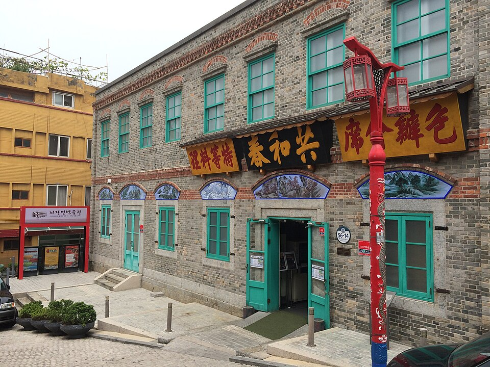
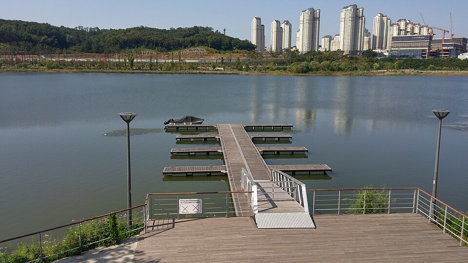

Gyeonggi et Incheon : adresses et lieux à voir dans les vidéos, de Chinatown d'Incheon à la rue du poulet de Suwon et au palais Hwaseong Haenggung
Guide d'une journée à Incheon et à Suwon, à proximité de Séoul, couvrant le restaurant de jajangmyeon, le marché, la friterie de poulet, les cafés et les balades présentés dans les vidéos.
Voir les vidéos sur la carte →
Le Gyeonggi et Incheon se visitent facilement en excursion d'une journée depuis Séoul, avec des sites allant de la forteresse Hwaseong de Suwon à Chinatown d'Incheon et à l'île de Ganghwa. La région est aussi réputée pour sa cuisine : le galbi et le poulet frit de Suwon, le jajangmyeon d'Incheon et l'anguille grillée de Ganghwa. Ci-dessous, les lieux présentés dans les vidéos sur Incheon et Suwon, regroupés par ville.
Incheon : Chinatown et Wolmido
Ces adresses apparaissent dans les itinéraires d'Incheon Incheon Chinatown – Berceau du jajangmyeon et Incheon Street Food, Chinatown & Wolmido Park.
Gonghwachun (공화춘)

📍 Gonghwachun · Naver Map · Google Maps
Un restaurant de Chinatown réputé pour son jajangmyeon à la sauce de haricots noirs. C'est là que la vidéo sur Chinatown, présentée comme le berceau du jajangmyeon, s'arrête pour goûter ce plat.
Parc de la Liberté (Jayu Park, 자유공원)
📍 Parc de la Liberté · Naver Map · Google Maps
Un parc avec une statue du général MacArthur et de belles vues. Il se prête naturellement à une promenade dans Chinatown.
Marché international de Sinpo (신포국제시장)

📍 Marché international de Sinpo · Naver Map · Google Maps
Un marché de street food coréenne, présenté dans la vidéo sur la street food d'Incheon. C'est un bon endroit pour grignoter plusieurs petites bouchées.
Tartya (타르트야)
📍 Tartya · Naver Map · Google Maps
Une boutique de tartelettes à l'œuf ; la vidéo met en avant la tartelette à l'œuf aux myrtilles. Pratique pour un encas en marchant.
Channel 12 Cafe (채널12 카페)
📍 Channel 12 Cafe · Naver Map · Google Maps
Un café en terrasse sur le toit qui apparaît comme une pause boisson pendant la balade de la journée.
Île de Wolmido (월미도)

📍 Île de Wolmido · Naver Map · Google Maps
Une île en bord de mer avec une promenade le long de l'eau. Comme le titre de la vidéo l'indique, elle est associée à Chinatown dans un itinéraire d'une journée.
Parc d'attractions de Wolmido (월미테마파크)
📍 Parc d'attractions de Wolmido · Naver Map · Google Maps
Un parc d'attractions sur Wolmido, qui vaut une halte si vous voulez quelques manèges en plus de la balade au bord de la mer.
Suwon : palais Haenggung, rue du poulet et Gwanggyo
Ces lieux apparaissent dans Suwon Day Trip: Hwaseong Fortress & Korea's Best Fried Chicken et Suwon – Hwaseong Fortress & Haenggung Palace at Night.
Gare de Suwon (수원역)

📍 Gare de Suwon · Naver Map · Google Maps
La principale gare ferroviaire de Suwon et un point de départ pratique pour la journée.
Palais Hwaseong Haenggung (화성행궁)
📍 Palais Hwaseong Haenggung · Naver Map · Google Maps
Présenté pour sa visite de nuit. La vidéo explore la forteresse Hwaseong de jour et revient au palais après la tombée de la nuit.
Rue du poulet frit de Suwon (수원 통닭거리)
📍 Rue du poulet frit de Suwon · Naver Map · Google Maps
Une rue bordée de friteries de poulet coréen, l'endroit idéal pour goûter le tongdak, la spécialité de Suwon.
Daebong Chicken (대봉통닭)
📍 Daebong Chicken · Naver Map · Google Maps
Une boutique qui sert du poulet entier frit à la coréenne (tongdak), présentée dans la vidéo sur le poulet frit de Suwon.
Bibliothèque Starfield Suwon (스타필드 수원 별마당 도서관)

📍 Bibliothèque Starfield Suwon · Naver Map · Google Maps
Une immense bibliothèque située dans le centre commercial Starfield Suwon. Marcher parmi ses rayonnages imposants est déjà un spectacle en soi.
Alleyway Gwanggyo (앨리웨이 광교)

📍 Alleyway Gwanggyo · Naver Map · Google Maps
Un complexe de rues mêlant shopping et restauration.
Dosan Bunsik, Gwanggyo Alleyway (도산분식)

📍 Dosan Bunsik, Gwanggyo Alleyway · Naver Map · Google Maps
Une adresse de bunsik, la cuisine coréenne de snacks, située dans Alleyway Gwanggyo.
OUR bakery (아우어 베이커리)
📍 OUR bakery · Naver Map · Google Maps
Une boulangerie qui fait une bonne pause pour du pain et un café.
Parc du lac de Gwanggyo (광교호수공원)

📍 Parc du lac de Gwanggyo · Naver Map · Google Maps
Un parc avec des sentiers de promenade autour du lac.
Galleria Department Store Gwanggyo (갤러리아백화점 광교점)
📍 Galleria Department Store Gwanggyo · Naver Map · Google Maps
Un grand magasin à Gwanggyo, pratique pour faire du shopping ou faire une pause à l'intérieur.
G Fassi (지파시)
📍 G Fassi · Naver Map · Google Maps
Une boutique de gelato, un arrêt dessert naturel après un repas.
Ichihachi (이치하치)
📍 Ichihachi · Naver Map · Google Maps
Un restaurant japonais qui apparaît dans les vidéos sur Suwon.
Conseils d'itinéraire
Incheon et Suwon se trouvent dans des directions différentes depuis Séoul, il est donc plus agréable de leur consacrer chacune une journée. À Incheon, commencez par un jajangmyeon chez Gonghwachun dans Chinatown, admirez les vues du Parc de la Liberté, grignotez au marché international de Sinpo et chez Tartya, faites une pause au Channel 12 Cafe, puis rejoignez Wolmido l'après-midi pour la promenade au bord de la mer et le parc d'attractions. À Suwon, partez de la gare de Suwon et passez la journée à Gwanggyo (Alleyway Gwanggyo, le parc du lac, le grand magasin et les cafés) ou à la bibliothèque Starfield, puis dînez de poulet frit dans la rue du poulet de Suwon le soir et terminez par la visite nocturne du palais Hwaseong Haenggung. Gwanggyo et le quartier du palais sont assez éloignés l'un de l'autre, prévoyez donc suffisamment de temps pour les trajets.
Lieux vus dans les vidéos
- Gonghwachun (공화춘) (공화춘) Jajangmyeon à la sauce de haricots noirs Naver Map Google Maps
- Parc de la Liberté (Jayu Park) (자유공원) (자유공원) Statue du général MacArthur, vues Naver Map Google Maps
- Marché international de Sinpo (신포국제시장) (신포국제시장) Street food coréenne Naver Map Google Maps
- Tartya (타르트야) (타르트야) Tartelettes à l'œuf (myrtilles) Naver Map Google Maps
- Channel 12 Cafe (채널12 카페) (채널12 카페) Café en terrasse sur le toit Naver Map Google Maps
- Île de Wolmido (월미도) (월미도) Promenade en bord de mer sur l'île Naver Map Google Maps
- Parc d'attractions de Wolmido (월미테마파크) (월미테마파크) Parc d'attractions Naver Map Google Maps
- Bibliothèque Starfield Suwon (스타필드 수원 별마당 도서관) (스타필드 수원 별마당 도서관) Immense bibliothèque dans le centre commercial Starfield Suwon Naver Map Google Maps
- Rue du poulet frit de Suwon (수원 통닭거리) (수원 통닭거리) Rue bordée de friteries de poulet coréen Naver Map Google Maps
- Daebong Chicken (대봉통닭) (대봉통닭) Poulet entier frit à la coréenne (tongdak) Naver Map Google Maps
- Gare de Suwon (수원역) (수원역) Principale gare ferroviaire de Suwon Naver Map Google Maps
- Alleyway Gwanggyo (앨리웨이 광교) (앨리웨이 광교) Complexe de rues de shopping et de restauration Naver Map Google Maps
- Dosan Bunsik, Gwanggyo Alleyway (도산분식 광교 앨리웨이점) (도산분식 광교 앨리웨이점) Snacks coréens (bunsik) Naver Map Google Maps
- OUR bakery (아우어 베이커리) (아우어 베이커리) Boulangerie Naver Map Google Maps
- Parc du lac de Gwanggyo (광교호수공원) (광교호수공원) Promenade autour du lac Naver Map Google Maps
- Galleria Department Store Gwanggyo (갤러리아백화점 광교점) (갤러리아백화점 광교점) Grand magasin Naver Map Google Maps
- G Fassi (지파시) (지파시) Gelato Naver Map Google Maps
- Palais Hwaseong Haenggung (화성행궁) (화성행궁) Visite nocturne du palais Naver Map Google Maps
- Ichihachi (이치하치) (이치하치) Cuisine japonaise Naver Map Google Maps
Adresses et horaires peuvent changer : vérifiez sur la carte avant d’y aller.
Vidéos associées


Autres articles
- Séoul à l'écran : cuisine et lieux issus de vidéos de voyage récentes
- Gangwon : manger et visiter entre mer et montagnes, des vidéos à Daepo (Sokcho) et Chodang (Gangneung)
- Lieux de Séoul vus à la télé : la Lotte World Tower à 541 m et le Mémorial de la Guerre de Corée
- Jeonnam à l'écran : téléphérique maritime de Yeosu et île d'Odongdo
- Guide gastronomique de Jeollanam-do : crabe de Yeosu, fruits de mer et accompagnements de Mokpo, et adresses de Gwangju vues dans les émissions coréennes
- Guide des marchés et street food de Séoul : quoi manger au marché Gwangjang, au marché aux poissons de Noryangjin et plus encore (d'après les vidéos de food tour)